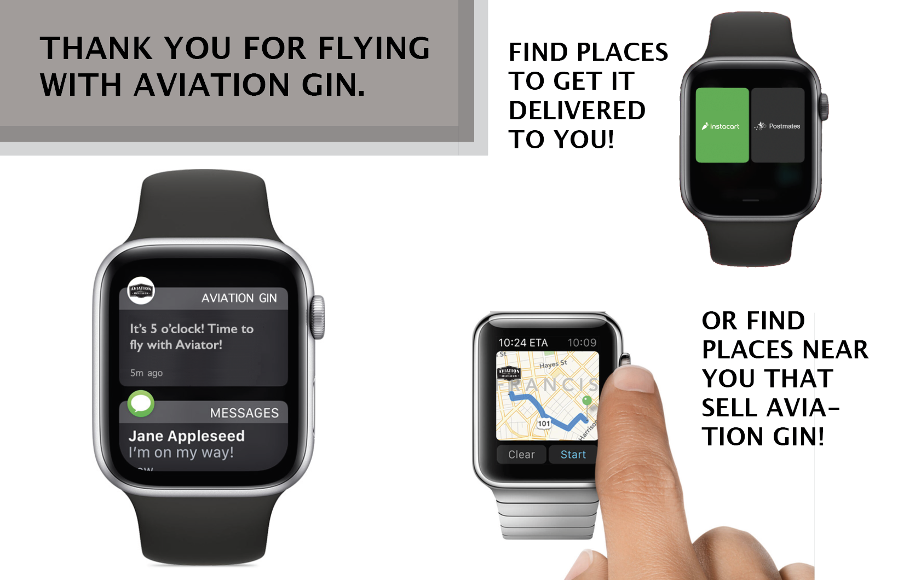

The ask was to increase sales of Aviator Gin through the use of an Apple Watch application or program. This is the result

On your Apple Watch, the Aviator Gin application will provide you with a helping hand. When 5 o'clock rolls around on Fridays, doesn't an ice col Gin & Tonic sound like everything you could ask for?
With Aviator Gin, you can get your hands on a bottle in no time! Simply choose whether you want to find a store and get ir yourself, or get it delivered to your home through one of our partners like Instacart or Postmates.